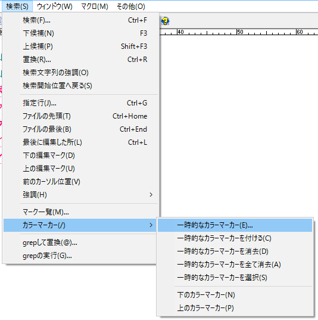
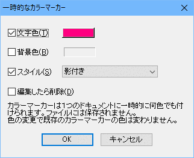
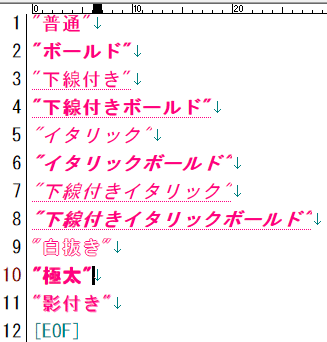
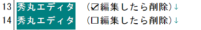
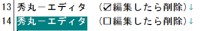

秀丸エディタ Ver.7.00以降では、「カラーマーカー」が使用可能です。 (Ver.7.00ではマクロからしか使えませんでしたが、Ver.8.00からダイアログが追加され、メニューから操作可能になりました。)
エディタ画面上で、任意の箇所にマーキングする事が可能です。 ただし、一時的なので、マーキングした状態は保存される事はありません。 ファイルを閉じた時点で消去され、再度ファイルを開いても、マーキングした状態には復帰しません。
また、カラーマーカーと検索と組み合わせると、検索にマッチする箇所を限定させる事が出来ます。 (「第II部〜知っていると便利な秀丸の機能 検索」にある「追加の条件」を参照してください)
直接ではありませんが、「すべて検索-色付け」や、「他の秀丸エディタと内容比較」も内部的にカラーマーカーを使用しています。
カラーマーカーを使うには、まず、マーカーを付ける範囲を選択します。 (通常の選択でも、箱形選択でも、複数選択でもかまいません。)
「検索」メニューから「カラーマーカー」−「一時的なカラーマーカー」を選ぶと、

「一時的なカラーマーカー」のダイアログが表示されます。

カラーマーカーで設定できるのは、「文字色」、「背景色」、「スタイル」です。 「編集したら削除」はカラーマーカーを付けた部分を編集した場合に、カラーマーカーを削除するかどうかの設定です。
「文字色」、「背景色」は、色を指定します。色を付ける場合はチェックし、横にあるボタンで色を選択します。 チェックしない場合は、色は設定されません。
スタイルは以下の設定が可能です。(例は文字色のみで、背景色設定なしという状態)

「編集したら削除」は、カラーマーカーをつけた箇所を編集した場合の動作を設定します。
同じ内容で、上の行は「編集したら削除」が有効、下の行は「編集したら削除」が無効に設定しています。

箱形選択を行い「秀丸」と「エディタ」の間に文字を挿入します。

「編集したら削除」が有効な場合は、カラーマーカー自体が削除されますが、 「編集したら削除」が無効な場合は、追加した部分を含め、カラーマーカーが維持されます。
「一時的なカラーマーカーを付ける」は、設定ダイアログを開かずに、 前回と同じ設定でカラーマーカーをつけます。
「一時的なカラーマーカーを消去」は、選択範囲した部分にあるカラーマーカーを消します。
「一時的なカラーマーカー全て消去」は、エディタ上にある全てのカラーマーカーを消します。
「一時的なカラーマーカー選択」は、エディタ上にある全てのカラーマーカーを範囲選択します。 複数箇所のカラーマーカーがある場合は、複数選択状態になります。
「下のカラーマーカー」、「上のカラーマーカー」は、カーソル位置を基準に、 上または下にある、カラーマーカーの先頭部分に移動します。
カラーマーカーには、レイヤー(layer)が存在します。
メニューから操作する場合は、“名前なしのレイヤー”(デフォルトのレイヤー)に対しての操作になります。
レイヤーを指定して、カラーマーカーを操作するには、現状ではマクロを使用するしかありません。 マクロを使用し、“名前なしのレイヤー”とは別のレイヤーにカラーマーカー付けた場合、 メニューから操作するカラーマーカー関連のコマンドは無効です。 (メニューからの操作は、“名前なしのレイヤー”以外のカラーマーカーは対象にならない。)
キーボードで複数選択を行う場合、「複数選択予約」、「複数選択予約を選択」、「複数選択予約を消去」、 「複数選択予約を全て消去」を何かのキーに割り当てておくと便利です。